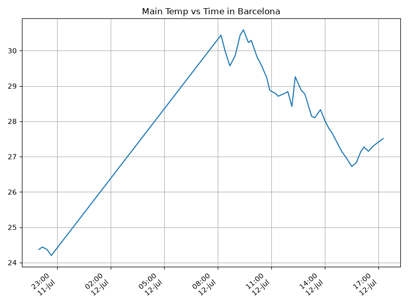
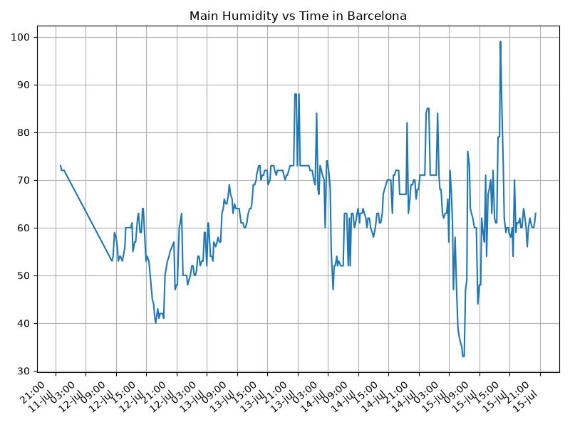
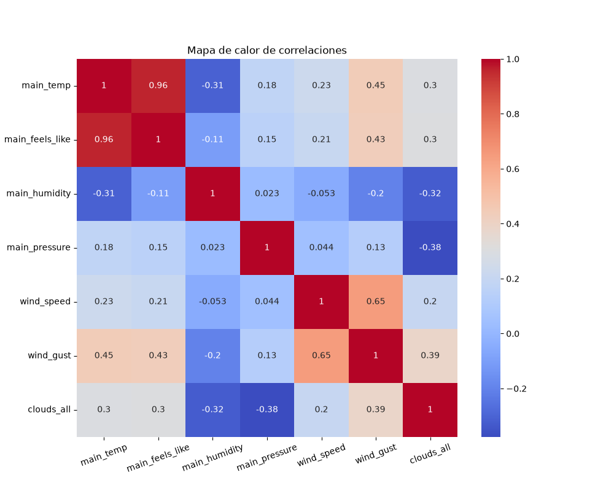

Proyecto ICCD332 Arquitectura de Computadores
1. City Weather APP
Este es el proyecto de fin de semestre en donde se pretende demostrar las destrezas obtenidas durante el transcurso de la asignatura de Arquitectura de Computadores.
- Conocimientos de sistema operativo Linux
- Conocimientos de Emacs/Jupyter
- Configuración de Entorno para Data Science con Mamba/Anaconda
- Literate Programming
1.1. Estructura del proyecto
Se recomienda que el proyecto se cree en el home del sistema operativo i.e. home/<user>. Allí se creará la carpeta CityWeather
cd cd BarcelonaWeather pwd
/home/juand/BarcelonaWeather
El proyecto ha de tener los siguientes archivos y subdirectorios. Adaptar los nombres de los archivos según las ciudades específicas del grupo.
.
|-- ChatCopilot.md
|-- ChatCopilot.md~
|-- CityTemperatureAnalysis.ipynb
|-- clima-barcelona-hoy.csv
|-- get-weather.sh
|-- get-weather.sh~
|-- main.py
|-- main.py~
|-- output.log
`-- weather-site
|-- build.sh
|-- build-site.el
|-- content
| |-- ieee754_sum.py
| |-- images
| | |-- evolucion_mensual_femicidios.png
| | |-- femicidios_provincia.png
| | |-- frecuencia_femicidios.png
| | |-- HeapMap.png
| | |-- Humidity.png
| | |-- prueba1.png
| | |-- prueba2.png
| | |-- prueba3.png
| | |-- prueba4.png
| | |-- prueba5.png
| | `-- Temperatura.png
| |-- index.org
| |-- index.org~
| |-- index.pdf
| |-- index.tex
| |-- main.py
| |-- pag2-sumaieee754.org
| |-- pag2-sumaieee754.pdf
| |-- pag2-sumaieee754.tex
| |-- page3-inec.org
| |-- page3-inec.pdf
| `-- page3-inec.tex
`-- public
|-- images
| |-- evolucion_mensual_femicidios.png
| |-- femicidios_provincia.png
| |-- frecuencia_femicidios.png
| |-- HeapMap.png
| |-- Humidity.png
| |-- prueba1.png
| |-- prueba2.png
| |-- prueba3.png
| |-- prueba4.png
| |-- prueba5.png
| `-- Temperatura.png
|-- index.html
|-- pag2-sumaieee754.html
`-- page3-inec.html
6 directories, 48 files
Puede usar Emacs para la creación de la estructura de su proyecto
usando comandos desde el bloque de shell. Recuerde ejecutar el bloque
con C-c C-c. Para insertar un bloque nuevo utilice C-c C-, o M-x
org-insert-structure-template. Seleccione la opción s para src y
adapte el bloque según su código tenga un comandos de shell, código de
Python o de Java. En este documento .org dispone de varios ejemplos
funcionales para escribir y presentar el código.
1.2. Formulación del Problema
Se desea realizar un registro climatológico de una ciudad \(\mathcal{C}\). Para esto, escriba un script de Python/Java que permita obtener datos climatológicos desde el API de openweathermap. El API hace uso de los valores de latitud \(x\) y longitud \(y\) de la ciudad \(\mathcal{C}\) para devolver los valores actuales a un tiempo \(t\).
Los resultados obtenidos de la consulta al API se escriben en un archivo clima-<ciudad>-hoy.csv. Cada ejecución del script debe almacenar nuevos datos en el archivo. Utilice crontab y sus conocimientos de Linux y Programación para obtener datos del API de openweathermap con una periodicidad de 15 minutos mediante la ejecución de un archivo ejecutable denominado get-weather.sh. Obtenga al menos 50 datos. Verifique los resultados. Todas las operaciones se realizan en Linux o en el WSL. Las etapas del problema se subdividen en:
- Conformar los grupos de 2 estudiantes y definir la ciudad objeto de estudio.
- Crear su API gratuito en openweathermap
- Escribir un script en Python/Java que realice la consulta al API y escriba los resultados en clima-<ciudad>-hoy.csv. El archivo ha de contener toda la información que se obtiene del API en columnas. Se debe observar que los datos sobre lluvia (rain) y nieve (snow) se dan a veces si existe el fenómeno.
- Desarrollar un ejecutable get-weather.sh para ejecutar el programa Python/Java.1
- Configurar Crontab para la adquisición de datos. Escriba el comando configurado. Respalde la ejecución de crontab en un archivo output.log
Realizar la presentación del Trabajo utilizando la generación del sitio web por medio de Emacs. Para esto es necesario crear la carpeta weather-site dentro del proyecto. Puede ajustar el look and feel según sus preferencias. El servidor a usar es el simple-httpd integrado en Emacs que debe ser instalado:
- Usando comandos Emacs:
M-x package-installpresionamos enter (i.e. RET) y escribimos el nombre del paquete: simple-httpd - Configurando el archivo init.el
(use-package simple-httpd :ensure t)
Instrucciones de sobre la creación del sitio web se tiene en el vídeo de instrucciones y en el archivo Org-Website.org en el GitHub del curso
- Usando comandos Emacs:
- Su código debe estar respaldado en GitHub/BitBucket, la dirección será remitida en la contestación de la tarea
1.3. Descripción del código
En esta sección se debe detallar segmentos importantes del código desarrollado así como la estrategia de solución adoptada por el grupo para resolver el problema. Divida su código en unidades funcionales para facilitar su presentación y exposición.
1.3.1. Librerías a utilizar y variables globales
Durante toda la recepción y transformación de los datos se utilizan las siguientes librerías: pandas, request, os, pathlib, json. Así también, las variables globales: BarcelonaLat, BarcelonaLon, APIKEY, fileName
import pandas as pd import requests import os import pathlib import json BarcelonaLat = 41.38879 BarcelonaLon = 2.15899 API_KEY = "b794b9218f841b4d649bce12eacc5aed" fileName ='clima-barcelona-hoy.csv' #modificado para coincidir con la ruta
1.3.2. Recepción de los datos crudos
Para conseguir los datos de la climatología de Barcelona se utiliza la API de openWeather, la cuál requiere los datos de Longitud, Latitud y una api key, datos que previamente definimos. Se utiliza la librería request para consumir la API y la librería json para convertir los datos en un diccionario de python utilizable.
def getWeather(lat, lon, api): URL = f"https://api.openweathermap.org/data/2.5/weather?lat={lat}&lon={lon}&appid={api}&units=metric" response = requests.get(URL) return response.json()
Con esto, al hacer una llamada al método con las variables correspondientes a Barcelona conseguimos datos en el siguiente formato
Barcelona_weather = getWeather(lat=BarcelonaLat, lon=BarcelonaLon, api=API_KEY) print(json.dumps(Barcelona_weather, indent=2, ensure_ascii=False))
{
"coord": {
"lon": 2.159,
"lat": 41.3888
},
"weather": [
{
"id": 800,
"main": "Clear",
"description": "clear sky",
"icon": "01n"
}
],
"base": "stations",
"main": {
"temp": 26.03,
"feels_like": 26.03,
"temp_min": 24.82,
"temp_max": 26.97,
"pressure": 1015,
"humidity": 71,
"sea_level": 1015,
"grnd_level": 1008
},
"visibility": 10000,
"wind": {
"speed": 3.3,
"deg": 245,
"gust": 3.8
},
"clouds": {
"all": 5
},
"dt": 1784084185,
"sys": {
"type": 2,
"id": 18549,
"country": "ES",
"sunrise": 1784089835,
"sunset": 1784143416
},
"timezone": 7200,
"id": 3128760,
"name": "Barcelona",
"cod": 200
}
Como se puede observar, la respuesta de la API genera diccionarios anidados. Por ejemplo, el
valor de temperatura mínima se encuentra anidado dentro de main. Uno
de los casos a tener en cuenta es el campo weather el cuál a
diferencia de main que es un único objeto, es un arreglo. Esto se debe
a que un mismo lugar puede tener varias situaciones climáticas a la
vez, haciendo que el valor especifico de description quede doblemente
anidado. Problema que se solucionará en el procesamiento de los datos
1.3.3. Procesamiento de datos
Una vez conseguido los valores en crudo, es necesario aplanarlos y colocar un formato para un posterior análisis. El método process recibe el dato crudo proveniente del paso anterior y realiza dos funciones: Solventar la doble anidación de weather y aplanar el formato json
def process(data): if "weather" in data and isinstance(data["weather"], list) and data["weather"]: data["weather_description"] = data["weather"][0].get("description", None) del data["weather"] else: data["weather_description"] = None return pd.json_normalize(data, sep="_")
El proceso consta de un condicional el cuál verifica tres condiciones
en el campo weather: Que exista en el json recibido, que
efectivamente sea una lista y finalmente que tenga al menos un
dato. Una vez verificado la existencia de estos campos procede a
extraer del primer elemento de la lista el valor correspondiente a
description guardandolo como weather_description y elimina la clave
original para que no haya repetición. En caso de que el condicional
falle, asigna un valor de None a este nuevo campo. Finalmente
utilizando pandas, el método devuelve el json aplanado mediante
jsonnormalize
jsonProcesado = process(Barcelona_weather) #Se utiliza transpose (T) para convertir filas en columnas para una mejor visualización print(jsonProcesado.T.to_string())
0
base stations
visibility 10000
dt 1784084185
timezone 7200
id 3128760
name Barcelona
cod 200
weather_description clear sky
coord_lon 2.159
coord_lat 41.3888
main_temp 26.03
main_feels_like 26.03
main_temp_min 24.82
main_temp_max 26.97
main_pressure 1015
main_humidity 71
main_sea_level 1015
main_grnd_level 1008
wind_speed 3.3
wind_deg 245
wind_gust 3.8
clouds_all 5
sys_type 2
sys_id 18549
sys_country ES
sys_sunrise 1784089835
sys_sunset 1784143416
1.3.4. Almacenamiento en csv
Con nuestros datos aplanados, es necesario guardarlos en un archivo
.csv, tarea que es designada al método write2csv. Sin embargo,
existe una variable que hasta ahora no ha sido contemplada: la API de
OpenWeatherMap genera campos como rain o snow únicamente cuando
ocurren estos fenómenos. Si el archivo inicial fue generado un día despejado,
esas columnas no existirán en la estructura base. Esto se soluciona
mediante la libreria pandas.
def write2csv(json_processed, csvFile): if os.path.isfile(csvFile): antiguo = pd.read_csv(csvFile) df=pd.concat([antiguo, json_processed], ignore_index=True) else: df = json_processed df.to_csv(csvFile, index=False)
El método consta de un condicional que verifica si el archivo CSV ya
existe en el disco. De ser así, lee el csv antiguo y lo
concatena con los nuevos datos mediante pd.concat. Esta función
alinea las columnas por su nombre, haciendo que si aparece un campo
nuevo como rain o snow, rellena con valores nulos los campos anteriores. En caso de que el
archivo no exista, no se hacen cambios a los datos recibidos. Finalmente,
los datos se exportan a formato CSV y se guardan en el disco.
write2csv(jsonProcesado, fileName)
Para ilustrar como se guardan los datos se utiliza la función readcsv
pd.read_csv(fileName).sample(4).T
| 27 | 88 | 185 | 197 | |
|---|---|---|---|---|
| base | stations | stations | stations | stations |
| visibility | 10000 | 10000 | 10000 | 10000 |
| dt | 1783882796 | 1783938410 | 1784026802 | 1784037421 |
| timezone | 7200 | 7200 | 7200 | 7200 |
| id | 3128760 | 3128760 | 3128760 | 3128760 |
| name | Barcelona | Barcelona | Barcelona | Barcelona |
| cod | 200 | 200 | 200 | 200 |
| weatherdescription | overcast clouds | scattered clouds | clear sky | few clouds |
| coordlon | 2.159 | 2.159 | 2.159 | 2.1606 |
| coordlat | 41.3888 | 41.3888 | 41.3888 | 41.3891 |
| maintemp | 28.01 | 30.17 | 30.07 | 30.22 |
| mainfeelslike | 29.35 | 32.56 | 31.48 | 34.13 |
| maintempmin | 26.41 | 28.81 | 29.37 | 28.71 |
| maintempmax | 29.61 | 33.44 | 32.94 | 34.09 |
| mainpressure | 1014 | 1015 | 1017 | 1016 |
| mainhumidity | 59 | 57 | 52 | 64 |
| mainsealevel | 1014 | 1015 | 1017 | 1016 |
| maingrndlevel | 1007 | 1007 | 1010 | 1009 |
| windspeed | 3.74 | 0.45 | 2.68 | 1.79 |
| winddeg | 67 | 94 | 162 | 143 |
| windgust | 4.33 | 4.02 | 4.02 | 3.13 |
| cloudsall | 95 | 29 | 1 | 14 |
| systype | 2 | 2 | 2 | 2 |
| sysid | 18549 | 18549 | 18549 | 18549 |
| syscountry | ES | ES | ES | ES |
| syssunrise | 1783830497 | 1783916942 | 1784003388 | 1784003388 |
| syssunset | 1783884314 | 1783970683 | 1784057051 | 1784057051 |
Con eso conseguimos nuestros datos limpios y planos para un posterior análisis
1.4. Script ejecutable sh
Para ejecutar nuestro script, es necesario conocer donde se encuentra
sh y para ello utilizamos el comando which.
which sh
/usr/bin/sh
De igual manera se requiere localizar el entorno de mamba iccd332 que será utilizado para la ejecución del script
which mamba
/home/juand/miniforge3/condabin/mamba
Con esto el archivo ejecutable contiene
#!/usr/bin/sh /home/juand/miniforge3/envs/iccd332/bin/python /home/juand/BarcelonaWeather/main.py
Finalmente se convierte en ejecutable dándole permisos de ejecución
#!/usr/bin/sh chmod +x /home/juand/BarcelonaWeather/get-weather.sh
1.5. Configuración de Crontab
Para crontab, se configura para un intervalo de 15 minutos, con la ejecución de nuestro script previamente creado. Guarda en el archivo output.log tanto la salida como los errores generados
*/15 * * * * cd /home/juand/BarcelonaWeather && ./get-weather.sh >> /home/juand/BarcelonaWeather/output.log 2>&1
2. Presentación de resultados
Para la presentación de resultados se utilizan las librerías de Python:
- matplotlib
- pandas
2.1. Muestra Aleatoria de datos
Presentar una muestra de 10 valores aleatorios de los datos obtenidos.
import os import pandas as pd from datetime import datetime # lectura del archivo csv obtenido dfRaw = pd.read_csv('/home/juand/BarcelonaWeather/clima-barcelona-hoy.csv') # se convierte de timestamps a tiempos legibles df = dfRaw.copy() df.dt = dfRaw.dt.apply(lambda x: datetime.fromtimestamp(x)) df.sys_sunrise = dfRaw.sys_sunrise.apply(lambda x: datetime.fromtimestamp(x)) df.sys_sunset = dfRaw.sys_sunset.apply(lambda x: datetime.fromtimestamp(x)) # se imprime la estructura del dataframe en forma de filas x columnas print(df.shape)
(252, 27)
Resultado del número de filas y columnas leídos del archivo csv
dfToShow = df.copy() for col in ['dt', 'sys_sunrise', 'sys_sunset']: dfToShow[col] = dfToShow[col].astype(str) table1 = dfToShow.sample(10) table = [list(table1)]+[None]+table1.values.tolist()
| base | visibility | dt | timezone | id | name | cod | weatherdescription | coordlon | coordlat | maintemp | mainfeelslike | maintempmin | maintempmax | mainpressure | mainhumidity | mainsealevel | maingrndlevel | windspeed | winddeg | windgust | cloudsall | systype | sysid | syscountry | syssunrise | syssunset |
|---|---|---|---|---|---|---|---|---|---|---|---|---|---|---|---|---|---|---|---|---|---|---|---|---|---|---|
| stations | 10000 | 2026-07-14 00:26:53 | 7200 | 3128760 | Barcelona | 200 | clear sky | 2.159 | 41.3888 | 25.59 | 26.01 | 24.19 | 26.85 | 1015 | 69 | 1015 | 1008 | 1.34 | 314 | 3.58 | 5 | 2 | 18549 | ES | 2026-07-13 23:29:48 | 2026-07-14 14:24:11 |
| stations | 10000 | 2026-07-12 13:59:56 | 7200 | 3128760 | Barcelona | 200 | overcast clouds | 2.159 | 41.3888 | 28.01 | 29.35 | 26.41 | 29.61 | 1014 | 59 | 1014 | 1007 | 3.74 | 67 | 4.33 | 95 | 2 | 18549 | ES | 2026-07-11 23:28:17 | 2026-07-12 14:25:14 |
| stations | 10000 | 2026-07-12 22:15:03 | 7200 | 3128760 | Barcelona | 200 | broken clouds | 2.159 | 41.3888 | 25.55 | 25.47 | 23.68 | 27.02 | 1014 | 50 | 1014 | 1006 | 2.45 | 51 | 2.75 | 52 | 2 | 18549 | ES | 2026-07-12 23:29:02 | 2026-07-13 14:24:43 |
| stations | 10000 | 2026-07-12 13:25:46 | 7200 | 3128760 | Barcelona | 200 | overcast clouds | 2.159 | 41.3888 | 28.1 | 29.95 | 26.5 | 30.72 | 1014 | 63 | 1014 | 1006 | 4.43 | 78 | 5.52 | 100 | 2 | 18549 | ES | 2026-07-11 23:28:17 | 2026-07-12 14:25:14 |
| stations | 10000 | 2026-07-12 08:10:47 | 7200 | 6544100 | Eixample | 200 | overcast clouds | 2.159 | 41.3888 | 30.44 | 32.26 | 28.81 | 32.84 | 1015 | 53 | 1015 | 1008 | 5.16 | 107 | 6.97 | 100 | 2 | 18549 | ES | 2026-07-11 23:28:17 | 2026-07-12 14:25:14 |
| stations | 10000 | 2026-07-12 18:41:11 | 7200 | 3128760 | Barcelona | 200 | broken clouds | 2.159 | 41.3888 | 26.63 | 26.63 | 24.69 | 27.61 | 1014 | 50 | 1014 | 1007 | 2.98 | 65 | 3.55 | 52 | 2 | 2032131 | ES | 2026-07-12 23:29:02 | 2026-07-13 14:24:43 |
| stations | 10000 | 2026-07-14 18:00:07 | 7200 | 3128760 | Barcelona | 200 | scattered clouds | 2.1648 | 41.3926 | 27.14 | 28.83 | 26.44 | 28.17 | 1015 | 67 | 1015 | 1009 | 0.45 | 115 | 0.89 | 42 | 2 | 18549 | ES | 2026-07-14 23:30:33 | 2026-07-15 14:23:36 |
| stations | 10000 | 2026-07-13 00:00:01 | 7200 | 3128760 | Barcelona | 200 | broken clouds | 2.159 | 41.3888 | 25.37 | 25.32 | 23.44 | 26.77 | 1014 | 52 | 1014 | 1006 | 0.45 | 298 | 4.02 | 51 | 2 | 18549 | ES | 2026-07-12 23:29:02 | 2026-07-13 14:24:43 |
| stations | 10000 | 2026-07-12 08:58:29 | 7200 | 6544100 | Eixample | 200 | overcast clouds | 2.159 | 41.3888 | 29.86 | 32.19 | 28.08 | 33.13 | 1015 | 58 | 1015 | 1008 | 1.79 | 109 | 4.47 | 100 | 2 | 18549 | ES | 2026-07-11 23:28:17 | 2026-07-12 14:25:14 |
| stations | 10000 | 2026-07-14 20:55:27 | 7200 | 3128760 | Barcelona | 200 | clear sky | 2.159 | 41.3888 | 26.49 | 26.49 | 24.82 | 27.05 | 1015 | 68 | 1015 | 1008 | 3.21 | 247 | 3.5 | 5 | 2 | 18549 | ES | 2026-07-14 23:30:35 | 2026-07-15 14:23:36 |
2.2. Gráfica Temperatura vs Tiempo
Realizar una gráfica de la Temperatura en el tiempo.
import matplotlib.pyplot as plt import matplotlib.dates as mdates # Define el tamaño de la figura de salida fig = plt.figure(figsize=(8,6)) plt.plot(df['dt'], df['main_temp']) # dibuja las variables dt y temperatura # ajuste para presentacion de fechas en la imagen plt.gca().xaxis.set_major_locator(mdates.HourLocator(interval=6)) plt.gcf().autofmt_xdate() plt.gca().xaxis.set_major_formatter(mdates.DateFormatter('%H:%M\n%d-%b')) # plt.gca().xaxis.set_major_formatter(mdates.DateFormatter('%Y-%m-%d')) plt.grid() # Titulo que obtiene el nombre de la ciudad del DataFrame plt.title(f'Main Temp vs Time in {next(iter(set(df.name)))}') plt.xticks(rotation=40) # rotación de las etiquetas 40° fig.tight_layout() fname = './images/Temperatura.png' plt.savefig(fname) fname

Figura 1: Gráfica Humedad vs Temperatura
Debido a que el archivo index.org se abre dentro de la carpeta
content, y en cambio el servidor http de emacs se ejecuta desde la
carpeta public es necesario copiar el archivo a la ubicación
equivalente en /public/images
cp -rfv ./images/* ~/BarcelonaWeather/weather-site/public/images
2.3. Realice una gráfica de Humedad con respecto al tiempo
fig = plt.figure(figsize=(8,6)) plt.plot(df['dt'], df['main_humidity']) # dibuja las variables dt y temperatura # ajuste para presentacion de fechas en la imagen plt.gca().xaxis.set_major_locator(mdates.HourLocator(interval=6)) plt.gcf().autofmt_xdate() plt.gca().xaxis.set_major_formatter(mdates.DateFormatter('%H:%M\n%d-%b')) # plt.gca().xaxis.set_major_formatter(mdates.DateFormatter('%Y-%m-%d')) plt.grid() # Titulo que obtiene el nombre de la ciudad del DataFrame plt.title(f'Main Humidity vs Time in {next(iter(set(df.name)))}') plt.xticks(rotation=40) # rotación de las etiquetas 40° fig.tight_layout() fname = './images/Humidity.png' plt.savefig(fname) fname

2.4. Opcional Presente alguna gráfica de interés.
Se realiza un gráfico de mapa de calor de correlaciones
import seaborn as sns datos = df[['main_temp', 'main_feels_like', 'main_humidity', 'main_pressure', 'wind_speed', 'wind_gust', 'clouds_all']] correlaciones = datos.corr() plt.figure(figsize=(10, 8)) sns.heatmap(correlaciones, annot=True, cmap='coolwarm') plt.xticks(rotation=20) plt.title("Mapa de calor de correlaciones") fname = './images/HeapMap.png' plt.savefig(fname) fname

3. Referencias
4. Navegación
Notas al pie de página:
Recuerde que su máquina ha de disponer de un entorno de anaconda/mamba denominado iccd332 en el cual se dispone del interprete de Python